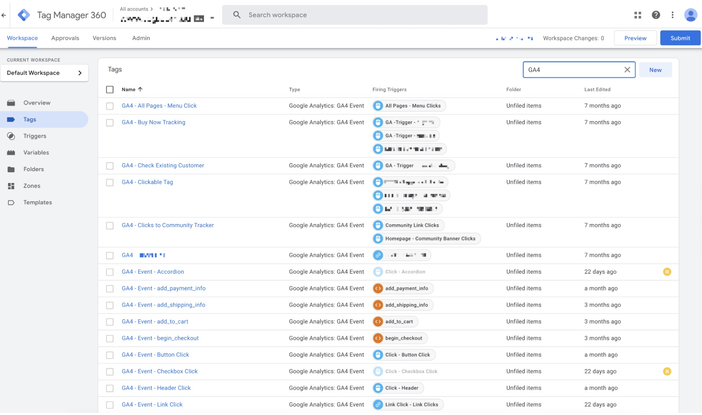

Skills
What is this project?
Due to the confidential nature of this project, I cannot reveal many key details, however, I will delve into key concepts which make this project particularly interesting.
Background
Our client was a company in the telecommunications verticle wanting to implement web analytics. The client was interested in path analysis, particularly in user journies across the site which led to conversions.
For this, we decided to employ Google Analytics 4 to track user interactions on the site. We implement tags and triggers using GTM. Taking a look inside GTM we see that tags can be made for a variety of interactions such as menu clicks, accordion clicks, link clicks and many others.
We used DOM-scrapping and Custom JavaScript Variables rather than dataLayer pushes to reduce dev resources on the client side. Interactions that were tracked include:
-
• button clicks
-
• accordion clicks
-
• menu clicks
-
• link clicks
-
• and more...
So what is the point of this tracking?
Once this data enters Google Analytics, we can then export this data to Google BigQuery. This is where the data transformation occurs. Using SQL queries, we can create a data architecture that allows us to provide the appropriate insights for the client. These include dimensions such as landing and exit pages, journey classification, and conversion funnels. This also allows us to break down by user properties.
Finally, using this restructured data, we can link BigQuery to Google Data Studio (Looker Studio) to create a dashboard with specialised data visualisations for the client to use in the future for their own business analytics purposes.